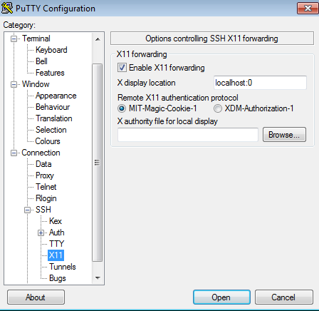

Module 7
Launching and Connecting
Sections of this module:
IntroductionCreate a ssh key
Launching an instance
Connect to the instance
Configuration and control
Connect to a remote desktop
Graphical Interfaces on the ssh terminal
Install a web server
Managing storage
Summary
Appendix
View all sections on one page (Printer friendly)
Graphical Interfaces on the ssh terminal
If you want to run a single graphical application, you can also do this without setting up a remote desktop. You can do this via the ssh command line and start the application directly.
The advantage is that you don’t need to set up a remote desktop server on your instance and install a client on your local machine.
The downsides are (1) it introduces some security issues, which will not be discussed in detail here, and are usually not a big worry (see security note below for a few details). And (2), this is (perhaps surprisingly) a lot slower than a remote desktop solution. This is because of the way the communication is encoded.
Note: This technique allows no desktop sharing, just remote application running (However you could use XNest, not discussed further at this point).

The security issue arising with running graphical applications via the ssh connection is that we have to enable X11 Forwarding. X11 is the base for the Linux graphical applications (e.g. opening windows). With X11 forwarding, the server is likely to gain shell access to the client (the ssh terminal you are running on your computer): the server can send X11 commands back to the client. X11 was not designed with security in mind, it was designed with the idea that all programs that you’re displaying are run by you and therefore trusted anyway. However ssh also has a SECURITY extension which disables some obvious attacks such as keyboard grabs and key injection. However it still allows other security issues like focus stealing.
In simple terms: Let’s say you open a SSH connection to <some-server>, with X11 forwarding enabled. The primary risk is that if <some-server> is malicious, then <some-server> can do all sorts of things to the windows/applications you have open on your own computer.
For instance, <some-server> can open up windows on your computer, can close other windows you have open, can spy on the contents of other windows you have open and on the keys you type into other windows. It can inject spoofed keystrokes and mouse events into other windows you have open, and generally just mess with every other window you have open on my machine — even if some of those other windows are local applications running locally.
In general, because you log on to your own remote machine and not just <some-server>, this security risk is not much of a worry — only if your instance was infected by malicious software, this would be a potential security lead.
Step 1. Check that your Instance allows X11 Forwarding
We have to enable X11 forwarding. It may already be enabled, but make sure it is. Go to your ssh terminal and type:
sudo nano /etc/ssh/sshd_config
to edit the configuration file.
Scroll down until you find the line
X11Forwarding yes
(it may be a no instead of the yes). If this line starts with a #, remove the #. Make sure it is set to yes. If you cannot find the line, add it at the end of the file, just as it is shown above.
Scroll further to find the following line:
X11DisplayOffset 10
and make sure it is set to 10.
Exit the editor with Ctrl+X (and confirm saving the file with ‘Y’).
If you did not have to change the file, you can jump to the next step.
Otherwise, you now have to restart ssh on your instance. You can do by typing:
sudo /etc/init.d/ssh restart
Step 2. Log in to your instance via ssh
Linux
Open up a terminal. We will connect to the instance with the ssh command that we used in an earlier section, but this time you have to add the -X option to the command, to enable graphics mode.
ssh -i <your-private-key-file> -X ubuntu@NNN.NNN.NNN.NNN
Mac
You first need to install XQuartz on your Mac. If you don’t have it already, download from the XQuartz website
Note: If you have previously followed the steps to install the X2Go Client, you will already have XQuartz installed!
After you installed XQuartz, open up a Terminal on your local computer. We will connect to the instance with the ssh command we used in an earlier section, but this time you have to add the -X option to the command, to enable graphics mode.
ssh -i <your-private-key-file> -X ubuntu@NNN.NNN.NNN.NNN
Windows
If you use Windows you will need to install a X11 server locally on your windows computer. You can use for example Xming.
Open your PuTTY session and load your settings that you previously saved (to do this, select Session in the navigation pane on the left, select your saved session from the list, and click Load).
Then, go to “Connection > SSH > X11” in the navigation pane. You need to check Enable X11 forwarding and specify the X display location. If you did not change anything in the default configuration of Xming, then set the display location to “localhost:0”.
Otherwise, if you change the Xming configuration using the tool Programs > Xming > XLaunch, make sure to set the parameters for the display accordingly.

Step 3. Install X Windowing system on your instance
Your instance still needs a concept of graphical interfaces, so we need to install it.
If you already have previously installed a desktop environment (e.g. LXDE, Gnome, KDE, XFCE) as we have done in an earlier section, then you can skip this step, because the windowing system is already installed.
To install the very basic windowing system, go to your ssh session into your instance and type:
sudo apt-get install xauth
sudo apt-get install x11-apps
It is likely the xauth package (first command) already installed, but we are doing this just in case. If it is installed, the first command will not re-install any packages.
Step 4. Run a graphical application
We will now test if this works. Go to your ssh terminal (or on Windows, the PuTTY terminal) and type:
xcalc &
This should open up a simple calculator application that is installed by default. You may have to wait quite a while until it opens up, as said earlier, this way to run graphical applications pretty slow.
Note: The & after the command causes the calculator to open up and detach from the terminal. If you skip it, the calculator will open, but you won’t be able to type other commands in the terminal.
If this worked, try a larger application, like firefox. Go to your ssh terminal (or PuTTY on Windows) and type:
sudo apt-get install firefox
(It may already be installed)
Then, type
firefox &
and wait a while until firefox opens. You may notice the amount of time you have to wait is much longer than when you have a remote desktop open (as an earlier section described). To start with, ignore some warnings and error messages that may come up — it really takes forever for firefox to come up.
Troubleshooting on Unix/Mac
If you receive errors trying to run graphical applications, try the option -Y (instead of -X) in your ssh command (in Step 2 above).

 This work is licensed under a
This work is licensed under a